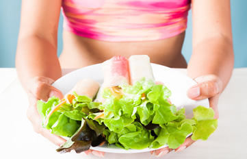

5 Simple Steps to Losing Weight

Losing weight and keeping it off, so if you have some extra fat just like many people, all of you know all the reasons why we should drop some weight. It will reduce the stress on our heart, decreasing the opportunity of coronary illness, malignant growth, probability of diabetes; feel much better, look progressively appealing, and so forth.
There are many reasons why however it can be very hard to lose some fat. You push extremely hard, lose some and in a short time, you realized you have gained some weight back again and you are heavier than you began.
It’s really crazy. so now enough with this issue, I have assembled 5 straightforward ways to really help youlosing weightand keeping it off. These steps can be applied to anything, yet we are concentrating on weight reduction here.
1- To Know What You Really Want 2- To Know Where Exactly You Are 3- Record Your Outcome 4- Adjust or Edit Your steps 5- Being considered Accountable
Presently the entirety of your additional weight will easily soften off. Better believe it right! A basic rundown of 5 things won’t do it, so let me clarify the complexities of the 5 things and where the hang-up ordinarily happens when applied to lose some fat.

To Know What You Really Want
This one is dead straightforward. The vast majority that needs to get more fit have a thought of what number of pounds they might want to lose or how they might want their body to look.
I figure we can securely say if your body began looking how you would have preferred it, you would know, regardless of whether you didn’t have it totally mapped out with details.
To Know Where Exactly You Are
This is the large excursion up. It is quite often ignored and is the main purpose behind the here and there Yo impact we involvement in shedding pounds. We are discontent with how our body feels and what it looks like and it is difficult to zoom in and get a precise image of where we are. Sadly, we need to know where we are, to have the option to precisely pass judgment on the outcomes we are getting.
You are out traveling to San Diego, California. You might want to begin your outing from Phoenix, Arizona, yet you truly don’t have the foggiest idea where you are. Don’t worry about it. You get an Arizona/California guide and locate that a straightforward 6 hours trip west on interstate 8 will get you to San Diego.
After 6 hours, you do not understand where you are and it is certainly not warm San Diego. You feel crushed and you need to surrender! Do you accuse the vehicle? The dumb maps? San Diego? Yourself?
Presently imagine a scenario in which I let you know, you were very New Your City, not Phoenix, Arizona. A 6-hour vehicle ride west from New York City will never get you to San Diego.
If you took the time to accurately find out where you were, you would have been able to choose the appropriate means to get to San Diego and have an expectation as to how long it would take.
In the event that you set aside the effort to precisely discover where you were, you would have had the option to pick a suitable way to get to San Diego and have a desire with regards to what extent it would take.
This is the equivalent ofweight reductionand our own state of being. In our brains, we think we are beginning in an alternate state of being than we truly are. At the point when the outcomes don’t follow the fantasy in your brain, we get resentful.

Record Your Outcome
This is actually basic. On the off chance that we have no idea concerning WHAT we are doing, how would we realize what is functioning? It may be easy to do, but at the same time is basic not to do. At long last, a great many people never track their outcomes.
Make Course Corrections
We love to do this one. We have it without a doubt. It resembles stage 1 of recognizing what you need. We attempt the new food diet, the super sit-up machine, and the cardio hip bounces power vitality yoga fat killer class.
We may be incredible at changing things up, however without knowing where we are beginning from and a background marked by followed results, we have no idea concerning what we should alter or even which course we ought to go.
Being considered Accountable
Actually no, not responsibility! That is an underhanded word. I don’t need somebody to realize what I am doing, or all the more critically what I am not doing.
All in all, for what reason do we oppose responsibility, your unmistakable advantage to weight reduction? Since it works! On the off chance that you realize somebody will be watching, you would finish or possibly feel entirely awkward not finishing.
Responsibility when utilized admirably is a definitive turbo promoter to your weight reduction. Since you will be responsible at any rate, you should receive something in return.
Utilizing responsibility in advance, you can accomplish the body you had always wanted. In the event that you let your body consider you responsible, it will help you losing weight and keeping it off.
The greatest hindrance toweight lossisn’t making any move. It doesn’t make a difference how great the arrangement is, it is useless in the event that you don’t tail it.
21,748 Women, 374,701lbs lost- This Changes EVERYTHING! Click To Learn More…
Recommended Products


Category
FREE OFFER